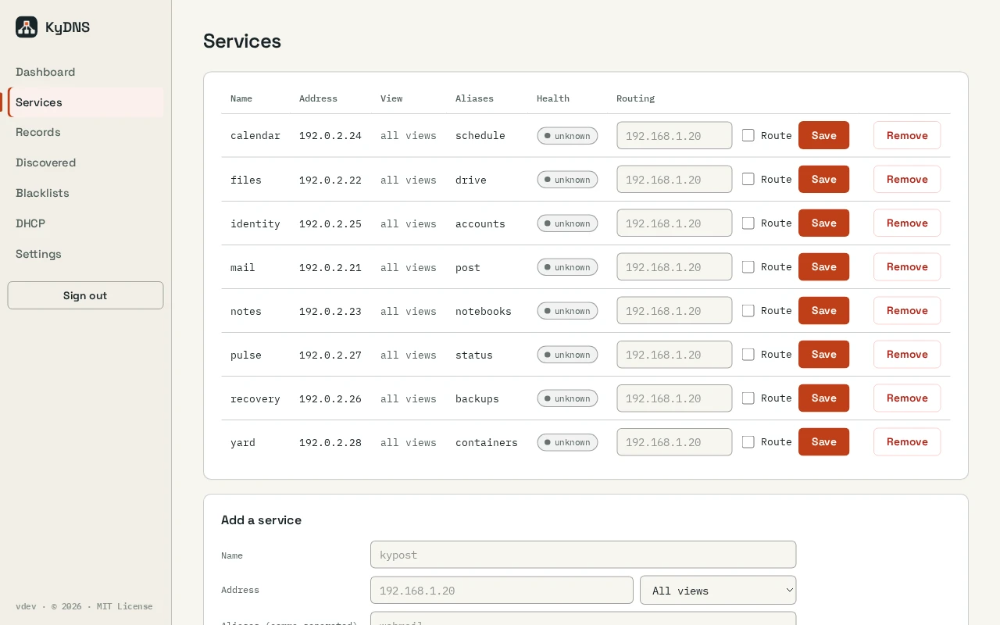

A directory, not a zone file
Register a service once with its addresses and aliases. Reverse records follow automatically, and manual A, AAAA and CNAME records cover the rest.
KyDNS / Local network
Private service names, local DNS and blocklist filtering for your network, with optional replication and sealed backups.
Open source (MIT) · ReleasedScreenshots
Example screens from local builds with fictional data. Appearance varies by version.

Inside KyDNS
Register a service once with its addresses and aliases. Reverse records follow automatically, and manual A, AAAA and CNAME records cover the rest.
Ad and tracker filtering is on by default, with built-in and custom lists and allow/deny rules. Your local names are never blocked.
Everything else is forwarded over DNS-over-TLS or DNS-over-HTTPS, with a cache and upstream failover.
Per-subnet views let the same name answer differently on the LAN and over a VPN.
HTTP, HTTPS and TCP checks show which services are up. An optional DHCP server comes with a setup wizard.
Settings apply live without a restart. Pair a second server for replication, export your config as YAML or JSON, and send sealed backups to KyRecovery.
How it fits together
Replica promotion is manual; automatic failover, local DNSSEC validation, IPv6 DNS advertisement and certificates for private names are not yet implemented. Port 53 needs the documented native permissions or container sysctl; the default container runs without root or added capabilities. DHCP requires a native or supported host-network install, not the LAN-attached Compose path.
Read the Busnes.app privacy policy. For data on an independently operated installation, contact its operator.
Next step
The README covers installation, upgrades, replication and backup.